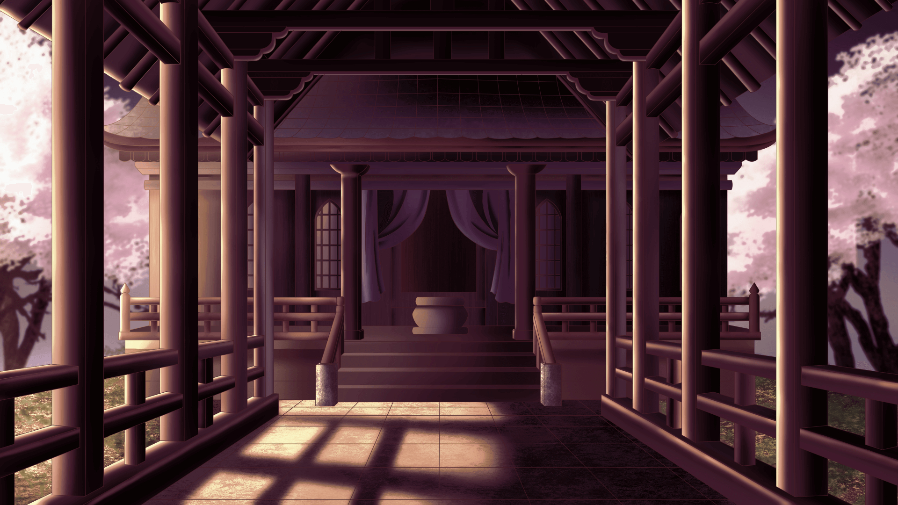

ストーリー
STORY
桜が咲くたびに、同じ夢を見る。
月の下、舞い散る花びらの中で
誰かが、私に手を伸ばしている。
知らないはずのその人を、
どうしてか、懐かしいと思った――
一人暮らしをしながら大学に通う篠宮結月は、穏やかな日々を送っていた。
ただひとつ、桜の季節になると繰り返し見る、不思議な夢を除いては。
ある日、結月は夢に出てくる人物とよく似た男性を見かけ、思わずその後を追いかける。
たどり着いたのは、古書店【夢見堂】。
店主の霧島弦真は穏やかに微笑んで彼女を迎えるが、
その瞳には、どこか哀しげな色が宿っていた。
その出会いを境に、結月の周りでは不思議な巡り合わせが重なっていく。
いつも一人でいる大学の先輩・三嶋光成。
行きつけのカフェで働く高校生・有栖川詩音。
地元に戻ってきた幼馴染・神尾涼馬。
そして突然目の前に現れ、結月に執着する謎の男性・鴻上伊織。
夢の中に映る、遠い日の記憶。
かつて「花祈姫」と呼ばれたひとりの姫と、彼女のそばにいた者たちの物語。
時を越えて巡り合った想いの先に、
結月が見つけるものとは――。